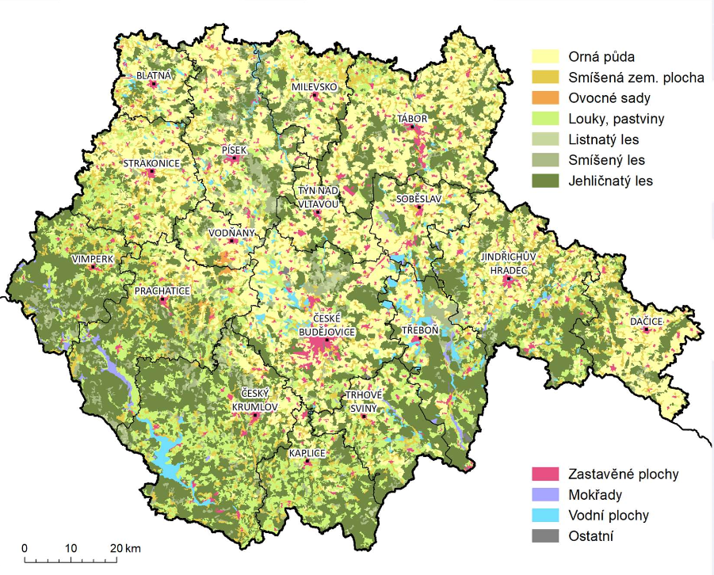
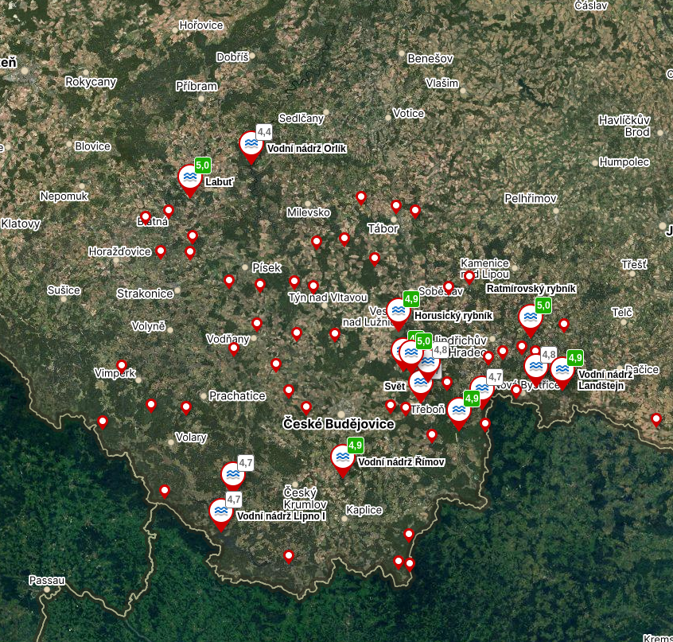

Pěstují se hlavně obiloviny, olejniny, pícniny a brambory
Chová se zde především skot a drůbež
Je zde asi 380 000ha lesů (38% rozlohy kraje)
Většina z toho jsou jehličnany
Těží se zde asi 2 660m3 dřeva ročně

Pěstují se hlavně obiloviny, olejniny, pícniny a brambory
Chová se zde především skot a drůbež
Je zde asi 380 000ha lesů (38% rozlohy kraje)
Většina z toho jsou jehličnany
Těží se zde asi 2 660m3 dřeva ročně

Už od 12.století se zde chovají ryby
Nejstarší jsou Bošilecký rybník a rybník Dvořiště
Rožmberk - největší rybník v ČR (489ha)
Jihočeský kraj tvoří asi polovinu produkce ryb v republice